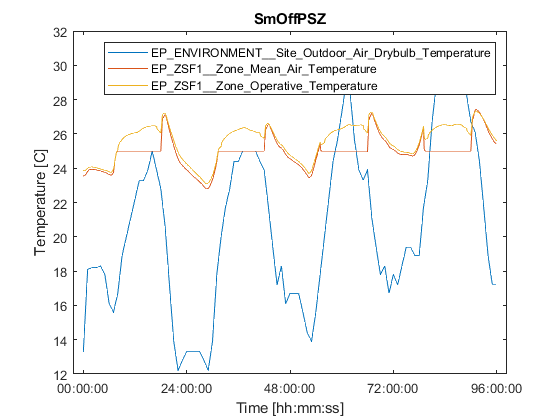

Matlab & EnergyPlus co-simulation example - using System Object
Demonstrates the functionality of the mlep (MatLab-EnergyPlus) tool on a small office building simulation scenario.
Note that a start of the simulation period as well as a timestep and an input/output configuration is defined by the the EnergyPlus simulation configuration file (.IDF). Climatic conditions are obtained from a EnergyPlus Weather data file (.EPW).
For a detailed description of mlep usage please refere to the 'mlepMatlab_example.m' example.
See also: mlepSimulink_example.slx
Contents
Instantiate mlep and configure simulation
ep = mlep; ep.idfFile = 'SmOffPSZ'; ep.epwFile = 'USA_IL_Chicago-OHare.Intl.AP.725300_TMY3'; ep.generateBusObjects = false; % use vector I/O % Use user-defined I/O configuration cd(fileparts(mfilename('fullpath'))); copyfile('variables_example.cfg','variables.cfg'); ep.setup('init'); pause(1); % pause to have the initial EnergyPlus output in this section
EP: ExpandObjects Started.
EP: No expanded file generated.
EP: ExpandObjects Finished. Time: 0.062
EP: EnergyPlus Starting
EP: EnergyPlus, Version 8.9.0-40101eaafd, YMD=2018.10.23 16:31
EP: Adjusting Air System Sizing
EP: Adjusting Standard 62.1 Ventilation Sizing
EP: Initializing Simulation
EP: Reporting Surfaces
EP: Beginning Primary Simulation
EP: Initializing New Environment Parameters
EP: Warming up {1}
EP: Instantiating Building Controls Virtual Test Bed
EP: ExternalInterface initializes.
EP: Opaque part contains invalid character: \
EP: Number of outputs in ExternalInterface = 3
EP: Number of inputs in ExternalInterface = 2
EP: Warming up {2}
EP: Warming up {3}
EP: Warming up {4}
EP: Warming up {5}
EP: Warming up {6}
EP: Starting Simulation at 06/01 for Chicago Ohare Intl Ap IL USA TMY3
WMO#=725300
EP: ExternalInterface starts first data exchange.
Simulate
endTime = 4*24*60*60; nRows = ceil(endTime / ep.timestep); logTable = table('Size',[0, 1 + ep.nOut],... 'VariableTypes',repmat({'double'},1,1 + ep.nOut),... 'VariableNames',[{'Time'}; ep.outputSigName]); iLog = 1; t = 0; while t < endTime u = [20 25]; % Send inputs to/ get outputs from EnergyPlus y = ep.step(u); % Obtain elapsed simulation time [s] t = ep.time; % Log data logTable(iLog, :) = num2cell([t y']); iLog = iLog + 1; end ep.release;
Plot results
plot(seconds(table2array(logTable(:,1))),... table2array(logTable(:,2:end))); xtickformat('hh:mm:ss'); legend(logTable.Properties.VariableNames(2:end),'Interpreter','none'); title(ep.idfFile); xlabel('Time [hh:mm:ss]'); ylabel('Temperature [C]');
EP: EnergyPlus process stopped with exitValue = 1.
Clean up
delete variables.cfg